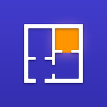

Pocket RoomiePlease read these, especially the safety notes · Last updated November 25, 2026
These terms cover the Pocket Roomie app for iPhone, the Pocket Roomie beacon firmware and installer for ESP32 boards, and this website (together, "Pocket Roomie"). By using Pocket Roomie you agree to them. If you don't agree, please don't use it. The Pocket Roomie app is distributed through Apple's App Store and is also governed by Apple's standard Licensed Application End User License Agreement ("Apple's EULA"). If these terms and Apple's EULA conflict about the app, Apple's EULA prevails.
Pocket Roomie is an independent app. It is not made, sponsored, endorsed or approved by Apple Inc. or by any accessory, beacon or chip maker. It works with the Apple Home app and the accessories you have already set up there; it does not replace them, and it does not change your Home setup. Product names are trademarks of their owners (see Legal & Credits).
Pocket Roomie can switch lights, outlets, fans, blinds, thermostats, locks, garage doors and other accessories in your home. Please use it responsibly:
Pocket Roomie is provided "as is" and "as available", without warranties of any kind, express or implied, including warranties of merchantability, fitness for a particular purpose, accuracy, reliability, availability, non-infringement and uninterrupted or error-free operation, to the maximum extent permitted by law. We don't promise that Pocket Roomie will work with every accessory, iPhone or iOS version, or that it will keep working after changes by Apple or others.
To the maximum extent permitted by law, the developers and contributors of Pocket Roomie are not liable for any indirect, incidental, special, consequential or punitive damages, or for any loss of data, profits, use or goodwill, or for any damage to property or to accessories, devices or boards, arising from or related to your use of (or inability to use) Pocket Roomie, even if we were told this could happen. To the maximum extent permitted by law, our total liability for any claim is limited to the amount you paid us for Pocket Roomie in the twelve months before the claim, or zero if you paid nothing.
Nothing in these terms excludes or limits liability that cannot be excluded or limited by law, such as liability for death or personal injury caused by negligence, for fraud or intentional wrongdoing, or any rights you have as a consumer under mandatory law where you live. Some places don't allow some of the limits above, so they may not apply to you.
Pocket Roomie relies on Apple's HomeKit and on accessories, beacons and boards made by others. We don't control them and are not responsible for them, for their behavior, safety, security or availability, or for what they do when Pocket Roomie sends them a command. Your use of them is under their makers' terms.
The website and the web installer are provided "as is". The installer uses your browser's Web Serial feature and works only in browsers that support it. Check what you are installing and from where; we can't promise that the page will be available or error-free.
Please don't misuse Pocket Roomie: don't use it unlawfully, don't try to break, overload or reverse engineer it except where the law or an open-source license lets you, don't remove notices, and don't present Pocket Roomie, its name or its icon as yours or as endorsed by us. The open-source parts (the firmware and the code samples published in our repository) may be used under their licenses.
The Pocket Roomie app, its icon, design, texts, screenshots and website are owned by the Pocket Roomie developers, and all rights are reserved (we claim no rights in any name that others may own), except for the open-source parts and the third-party materials listed in Legal & Credits, which stay under their own licenses. Using Pocket Roomie gives you a limited, personal, non-exclusive, non-transferable right to use the app, under Apple's EULA, and no ownership of it.
If you send us ideas, bug reports or other feedback (for example on GitHub), we may use them freely, without payment or credit. Please don't send anything private or confidential.
We may change Pocket Roomie, or these terms, from time to time; the current terms are on this page with their date. Continuing to use Pocket Roomie after a change means you accept it. You can stop using Pocket Roomie at any time by deleting the app. If a part of these terms is found unenforceable, the rest still applies. Not enforcing a term is not giving it up. These terms are the whole agreement between you and us about Pocket Roomie, apart from Apple's EULA. They are governed by the law that applies where the developers are established, without its conflict-of-law rules, except that the mandatory consumer protection laws of the country where you live still apply to you.
Questions about these terms? Open an issue at github.com/pocketroomie/pocketroomie/issues.
Last updated November 25, 2026.